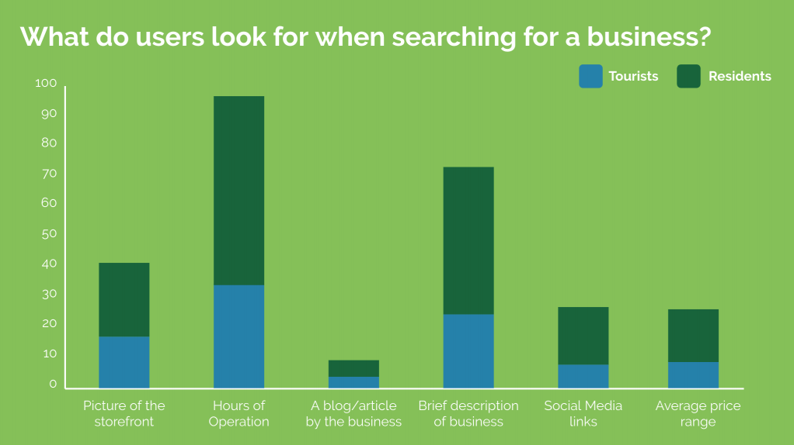
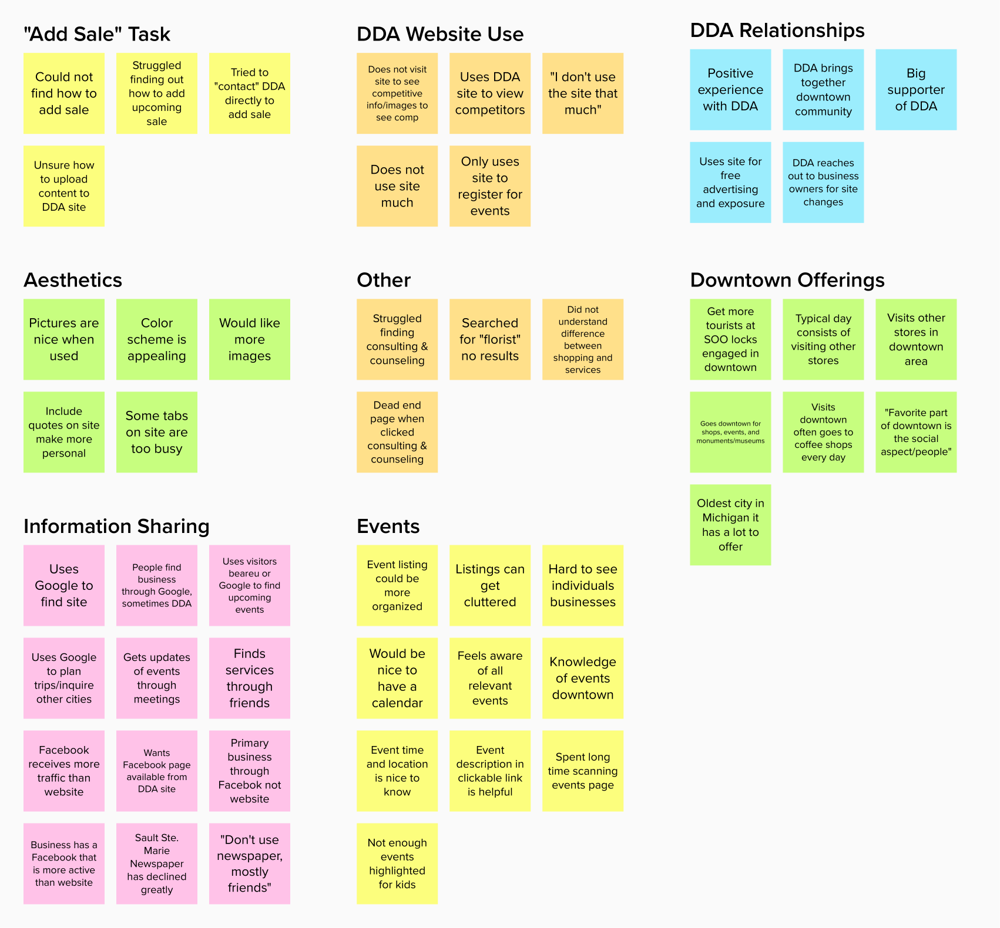

Bringing Business to a Historic Downtown Area
UX / Research / Design
Context
The city of Sault Ste. Marie is the oldest city in the state of Michigan. Our client, the Sault Ste. Marie Downtown Development Authority (DDA), wanted to update their website to attract more visitors and increase business at local restaurants and stores.
Phase I: Research
To gain a better understanding of what business owners, residents, and visitors are looking for when visiting the site, we needed to find answers to these questions:
1. Why do our user groups visit the site?
2. What information is most necessary to have on the site (for both owners and customers)?
3. How are users interacting with the current site?
Research Methods
Surveys
Interviews
Usability Testing
🔑 Key Findings
Interviews
• Visitors want a more organized events page
• Business owners want more promotional information about their stores on the DDA site
• Business Facebook pages receive more traffic than business’ own websites
"Our primary business occurs through our Facebook page, not through our [company's] actual website" -Sault Ste Marie Business Owner"
Usability Testing
• Business owners had difficulty adding their sales to the DDA site
• Event images make the the town “seem like an enjoyable place to visit”
• The search function was broken
"I didn't know I had the power to do that" -Sault Ste Marie Business Owner
Surveys
• Participants most want to see businesses operation hours, business description, and a storefront picture.
• Participants said they use the site to find events that are happening downtown
• Website is not mobile device friendly
"Current downtown website is not mobile device friendly on some pages (thinking primarily events)" -Sault Ste Marie Business Resident
“Website should be compatible for smartphones” -Sault Ste Marie Resident
What do users look for in a business?
Phase II: Analysis
The key findings above are based on this analysis. To analyze the data we collected from our surveys, we used Qualtrics and noted our observations in an excel sheet. To view this analysis in more detail reference the 🔍 complete research report .
To analyze the data collected from our usability tests and interviews we used affinity mapping.
Affinity Mapping
Personas and User Journeys
Our research helped us identify four major user groups including business owners, Sault Ste. Marie residents, frequent tourists, and first-time visitors. We created personas and user journeys using the survey and interview data to gain a better understanding of each group.
Requirements
After analyzing our research and creating personas we developed requirements using the MoSCoW Method. This helped us prioritize our tasks so we could deliver the maximum benefit for our client in fastest time frame.
Phase III: Design
Based on the research our team conducted, we decided to focus our redesigns on the Directory and Events pages. These two pages are specific sections that draw users into the downtown area. The directory is where they go to find information they seek about businesses and events bring visitors into town. Both of these relate back to our challenge of attracting more visitors and bringing more business to stores.
Sketches
To brainstorm, each member of our team created initial design sketches. These sketches were guided by the requirements we developed in the research phase.
In my sketches, I focused on user's feedback of:
• Improving the organization
• Making desired business information easy to find
• Including promotional opportunities for bussinesses.
Preference Testing
After sketching, we built lo-fi wireframes that we could use to conduct preference tests. These tests showed particpants side by side versions of each potential design. Each participant identified which design they preferred and gave an explanation as to why. This helped our team determine which designs we would move forward with.